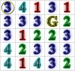

|
|
|

Professor of Computer Science at Gettysburg
College |
|
|
| COURSES |
|
Previous courses:
CS 103: Introduction to Computing (Home Page, Online Text),
CS 107: Introduction to Scientific Computation,
CS 111: Computer Science I,
CS 112: Computer Science II,
CS 216: Data Structures,
CS 371: Artificial Intelligence,
CS 374: Compilers,
CS 391: Selected Topics: Game Artificial Intelligence,
CS 391: Selected Topics: Data Mining,
CS 391: Selected Topics: Machine Learning,
CS 392: Selected Topics: Game Artificial Intelligence.
|
| RESOURCES |
|
|
| GAMES AND PUZZLES |
- The Game of Pig,
Red Light
-
Mazes: Rook Jumping Maze,
Word
Maze Puzzle, Oskar's
4-Bit Maze
-
Peg Squirrelitaire
- Game Resources and Recommendations,
Chess and Chip Games
- Stores:
Funagain, GameSurplus,
BoardGamePrices
- Sites:
BoardGameGeek,
Recommended Games for Children
- Paper Pen-guins,
Decorative Post-it Wall
Tetris, Interactive Fiction,
Poker Squares,
Parameterized Poker Squares
|
|
ABOUT |
|
Todd W. Neller is a Professor of
Computer Science at Gettysburg College. A Cornell University Merrill
Presidential Scholar, he received a B.S. in Computer Science with
distinction in 1993. In 2000, he received his Ph.D. with distinction
in teaching at Stanford University, where he was awarded a Stanford
University Lieberman Fellowship, and the George E. Forsythe Memorial
Award for excellence in teaching. His dissertation concerned
extensions of artificial intelligence (AI) search algorithms to hybrid
dynamical systems, and the refutation of hybrid system properties
through simulation and information-based optimization. A game
enthusiast, Neller has in recent years enjoyed pursuing game AI
challenges, computing optimal play for jeopardy dice games such as
Pass the Pigs and bluffing dice games such as Dudo, creating new
reasoning algorithms for Clue/Cluedo, analyzing optimal
Risk attack and defense policies, and designing logic mazes.
|
|
|
ROOK JUMPING MAZES |
|
ROOK JUMPING MAZE GENERATION: What is a Rook Jumping Maze,
and how can they be generated? Enjoy the fun
results of our faculty and student
design project.
 |
| REINFORCEMENT LEARNING |
| REINFORCEMENT LEARNING (RL) techniques allow computers to
learn good behaviors through trial and error rather than have such behaviors explicitly programmed. We apply such techniques to the
metalevel control of search and optimization algorithms. For
example, we have successfully applied RL techniques to the control
of simulated annealing, dynamically adjusting the temperature and
deciding when to terminate optimization.
| |
{kind=link}